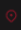

DU 21 > AU 25 FEVRIER 2024
Salon du vin à
Cournon-d'Auvergne
GRANDES HALL D'AUVERGNE, COURNON D'AUVERGNE
LE RASSEMBLEMENT AUVERGNAT
pour les fins palais
Alors que les prochains millésimes se
créent dans le secret
des caves, les
vignerons en profitent pour venir dans
le Massif Central à la rencontre des
amateurs
d'escapades gourmandes.
Depuis plus d'un quart de siècle, le salon du vin de
Clermont-Ferrand représente le rendez-vous de
début
d'année pour les fins palais. Chaque année,
ce sont 35 000
visiteurs qui participent à cet
événement d'envergure
nationale.
35K
VISITEURS EPICURIENS
Chaque année, 35 000 visiteurs
affluent dans les larges
allées de la
Grande Halle d'Auvergne. Ce rendez-
vous
attire un public désireux de
partager des produits
authentiques.
300
EXPOSANTS DE FRANCE & NAVARRE
En provenance des terroirs
emblématiques de France et de
Navarre, plus de 300 exposants, dont
quelques 250
viticulteurs, participent à
cet événement d"envergure
nationale.
3
POLES A PARCOURIR
Les meilleurs producteurs de nos
terroirs sont regroupés
selon leurs
«spécialités», qui toutes
contribuent à
la réputation de savoir vivre de notre
pays.
51ème
EDITION DU SALON
Alors que vous soyez vin ou
gastronomie, peu importe ! Le
salon
du vin de Clermont-Ferrand vous
permet
d'éveiller tous vos sens et ce,
en toute convivialité !
UN TOUR DE FRANCE
au coeur des vignobles
Rendez-vous incontournable en Auvergne,
le salon du vin de
Clermont-Ferrand vous
invite à découvrir les produits des
régions
viticoles de France et à profiter des
conseils
des producteurs.
Le salon met aussi à l'honneur les produits gastronomiques
avec
une soixantaine d'exposants proposant des produits
de bouche.
Charcuterie, fromage et autres spécialités
locales seront à
associer avec vos vins favoris.
LE BLOG
une ballade gourmande ...
Comment conserver son vin après
ouverture ?
Les salons du vin, des évènements
vins et gastronomie et une
équipe
pour les organiser
2018, une année placée sous le
signe du renouveau
A la découverte des confréries des
vins
INSCRIPTION A
Newsletter
INFOS PRATIQUES
Tarifs du salon
Plus grand rendez-vous de vins
et de gastronomie en
Auvergne,
le salon du vin de Clermont-
Ferrand est de
retour pour sa
51éme édition du 21 au 25 février
2024.
|
Billet adulte plein tarif Entrée valable pour 1 personne adulye. Toute sortie est définitive. |
6€ |
|
billet jeune -18 ans Moins de 18 ans accompagné d'un adulte muni d'un billet ou d'une invitation. Toute sortie est définitive |
GRATUIT |
|
Invitation avec un code promo Entrée gratuite valable pour 1 personne. Toute sortie est définitive. |
GRATUIT |
INFOS PRATIQUES
Comment venir ?
Grande Halle d'Auvergne,
Cournon d'Auvergne
04 73 17 19 22
Vendredi 2 Février : de 14h à 20h30
Samedi 3 Février : de 10h à
20h30
Dimanche 4 février : de 10h à 19h30
Lundi 5 Février
: de 10h à 16h